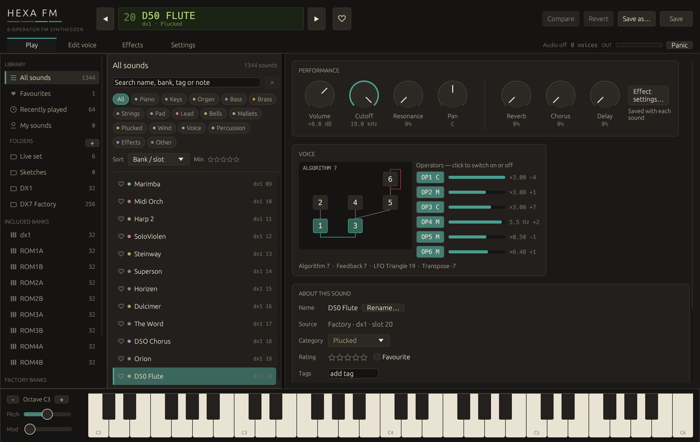
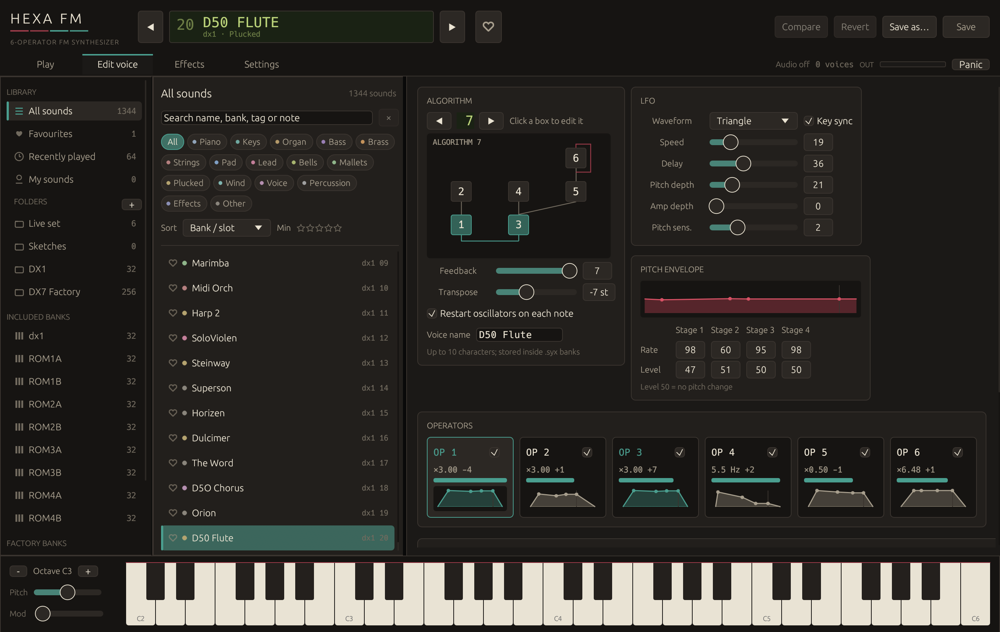
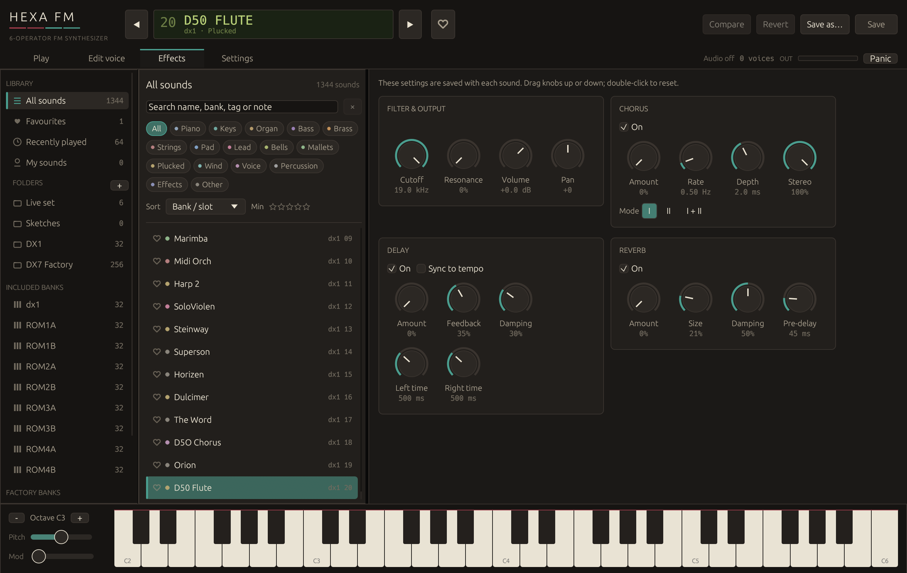
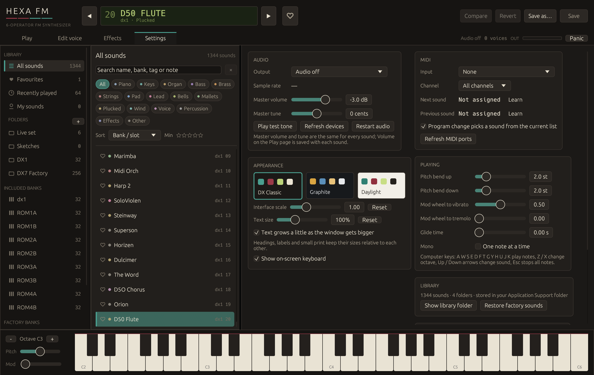

Standalone app for Mac and Windows · VST3, CLAP and Audio Unit plugins
Free and open source under the GNU GPL v3 · A redesign of AV Dexed, based on DEXED
Click any line to jump to that chapter. Every chapter has a "Contents" link at the top to come back here.
Hexa FM is a synthesizer built around frequency modulation (FM), the sound of the classic 1983 six-operator keyboards: glassy electric pianos, punchy basses, bells, brass and evolving pads. It comes with more than 1,300 ready-made sounds and a library that makes them easy to find, sort and keep.
You can use Hexa FM in two ways:
| File | What it is |
|---|---|
| HexaFM-0.1.0.pkg | Mac installer. Lets you choose the app and any of the AU, VST3 and CLAP plugins. |
| HexaFM-0.1.0.dmg | Mac disk image with the installer, the app to drag into Applications, the plugin files, this manual and the licence. |
| HexaFM-Setup-0.1.0.exe | Windows installer for the app and the VST3 and CLAP plugins. |
| HexaFM-Mac-Plugins.zip / HexaFM-Windows-Plugins.zip | Just the plugin files, to drop into your plugin folders yourself (chapter 5). |
| HexaFM-Source.zip | The source code, as the GPL v3 licence requires. |
Hexa FM runs on macOS 11 (Big Sur) or later, on both Apple-silicon and Intel Macs.
The app goes into /Applications. The plugins go into /Library/Audio/Plug-Ins/ in the Components (AU), VST3 and CLAP folders.
Open HexaFM-0.1.0.dmg. Drag Hexa FM.app onto the Applications shortcut next to it. The Plugins folder holds the plugin files to copy by hand (chapter 5).
Open Hexa FM from Applications or Launchpad. In music software, restart it or rescan plugins. Logic Pro and GarageBand check new Audio Units automatically the next time they start.
macOS checks every program you download. Programs from big companies are "notarised" through a paid Apple developer account. This free release isn't, so the first time you open it macOS shows a warning such as "Apple could not verify 'HexaFM-0.1.0.pkg' is free of malware" or "cannot be opened because the developer cannot be verified". Nothing is wrong with the file. You just need to tell your Mac that you trust it, once.
Files downloaded from the internet carry a "quarantine" mark. Removing it tells macOS you trust them. Open Applications › Utilities › Terminal and paste the line for what you installed, then press Return:
xattr -dr com.apple.quarantine "/Applications/Hexa FM.app" xattr -dr com.apple.quarantine "/Library/Audio/Plug-Ins/Components/Hexa FM.component" xattr -dr com.apple.quarantine "/Library/Audio/Plug-Ins/VST3/Hexa FM.vst3" xattr -dr com.apple.quarantine "/Library/Audio/Plug-Ins/CLAP/Hexa FM.clap"
If you installed the plugins into your own Library (chapter 5), use ~/Library/Audio/Plug-Ins/… in those lines instead. If Terminal says "Permission denied", put sudo in front of the line and enter your password.
killall -9 AudioComponentRegistrarHexa FM runs on 64-bit Windows 10 and 11.
| Just me | Everyone | |
|---|---|---|
| App | %LOCALAPPDATA%\Programs\Hexa FM | C:\Program Files\Hexa FM |
| VST3 | %LOCALAPPDATA%\Programs\Common\VST3 | C:\Program Files\Common Files\VST3 |
| CLAP | %LOCALAPPDATA%\Programs\Common\CLAP | C:\Program Files\Common Files\CLAP |
Hexa FM appears in the Start menu. To remove it, use Settings › Apps › Installed apps › Hexa FM › Uninstall, or run Uninstall Hexa FM.exe in the app folder. Your sound library is kept.
If you prefer not to use an installer, unzip HexaFM-Mac-Plugins.zip or HexaFM-Windows-Plugins.zip and copy each plugin into the matching folder. Then restart your music software, or tell it to rescan plugins.
| Format | File | For all users | Just for you |
|---|---|---|---|
| Audio Unit | Hexa FM.component | /Library/Audio/Plug-Ins/Components | ~/Library/Audio/Plug-Ins/Components |
| VST3 | Hexa FM.vst3 | /Library/Audio/Plug-Ins/VST3 | ~/Library/Audio/Plug-Ins/VST3 |
| CLAP | Hexa FM.clap | /Library/Audio/Plug-Ins/CLAP | ~/Library/Audio/Plug-Ins/CLAP |
To open your own Library folder: in Finder choose Go › Go to Folder… and type ~/Library/Audio/Plug-Ins. Create the VST3 or CLAP folder if it isn't there. After copying, run the Terminal lines from chapter 3 to remove the quarantine mark.
| Format | File | Folder |
|---|---|---|
| VST3 | Hexa FM.vst3 (a folder) | C:\Program Files\Common Files\VST3 |
| CLAP | Hexa FM.clap | C:\Program Files\Common Files\CLAP |
The standalone Windows app (Hexa FM.exe) can also live anywhere you like; just double-click it.

| Part | What it does |
|---|---|
| Display (top, green) | Shows the sound's slot, name, bank and category. EDITED appears when you have changed the sound and not saved it. Use ◀ ▶ (or the Up and Down arrow keys) to step through sounds, and ♡ to mark a favourite. |
| Save · Save as… · Revert · Compare | Keep or undo your changes (chapter 8). |
| Tabs | Play (big controls and information about the sound), Edit voice (operators, chapter 10), Effects (chapter 11), Settings (chapter 12). |
| Library sidebar (left) | All sounds, Favourites, Recently played, My sounds, your folders, the banks and the Trash. |
| Sound list | Search, filter by category or tag, sort, and click a sound to load it. Right-click a sound for more options. |
| Keyboard (bottom) | Click to play. Pitch and Mod act like a keyboard's wheels. − and + change the octave. |
| OUT meter | Shows the output level; it turns red near clipping. Panic stops all notes. |
Click the on-screen keys. Clicking lower on a key plays louder, like hitting a real key harder.
When you aren't typing in a text box:
| Keys | Action |
|---|---|
A W S E D F T G Y H U J K O L P ; | Play notes (A is C; the top row gives the black keys) |
Z / X | Octave down / up |
↑ / ↓ | Previous / next sound in the list (hold to keep stepping; it wraps round at the ends) |
Esc | Stop all notes (panic) |
⌘S / Ctrl+S | Save the sound |
⌘F / Ctrl+F | Jump to the search box |
In the standalone app, choose your keyboard under Settings › MIDI › Input. Hexa FM responds to notes, velocity, the pitch-bend wheel, the mod wheel (vibrato or tremolo, set in Settings › Playing) and the sustain pedal. You can also assign two buttons or pedals to step to the next and previous sound: click Learn, then press the button.
Every sound you have, factory or your own, lives in one library. Nothing is ever overwritten by accident: factory sounds stay as they are, and your edits become sounds of your own.
A folder is like a playlist: a sound can be in several folders, and deleting a folder never deletes its sounds. Create one with the + next to FOLDERS. Then right-click a sound › Folders to tick the folders it belongs to, or use the Folders row in About this sound on the Play page.
Right-click any sound in the list for: Rating (1–5 stars), Category, Folders, Rename, Duplicate, Export and Move to Trash. The ♡ at the start of each row marks a favourite with one click.
The About this sound card on the Play page shows the same information for the current sound and adds tags (type a word and press Return), author and notes, a good place to write where you used a sound. The original name stored in the bank is shown as "Bank name".
Hexa FM guesses each factory sound's category from its name, or from how it behaves (slow attack means a pad, a quick fade means plucked). Change it whenever you like.
| Button | What happens |
|---|---|
| Save | Saves your changes. For your own sounds it updates the sound. For factory and imported sounds it makes a new copy in My sounds, so the original stays untouched. |
| Save as… | Saves a new sound with a name, category and folder of your choice. |
| Revert | Throws away your changes since the last save. |
| Compare | Switches between the saved version and your edited version so you can hear the difference. Click again to go back to your edit. |
If you pick another sound while you have unsaved changes, Hexa FM asks whether to Save, Discard or Cancel.
Import… (in the sidebar), or dragging files onto the window, adds six-operator SysEx banks (.syx, 32 sounds each) and single Hexa FM sounds (.hexafm). Each bank gets its own entry under Imported banks, and you can also put the sounds straight into a folder.
Export… saves the sounds in the current list as .syx banks (32 per file), which other six-operator synths and editors can read. Right-click a folder or bank to export just that. Right-click a single sound to export it as .syx or as a .hexafm file, which keeps its effects, tags and notes too.
Trash: deleted sounds go to the Trash first; open it to Restore them or Empty Trash. Settings › Library › Restore factory sounds brings back any factory sound you deleted.
The Play page holds the controls you'll use most. Drag a knob up or down to turn it, hold Shift for fine steps, use the scroll wheel, or double-click to reset it. These settings are saved with each sound.
| Knob | What it does |
|---|---|
| Volume | The loudness of this sound (−24 to +12 dB). |
| Cutoff | Brightness. Turning it down makes the sound darker and softer (60 Hz to 19 kHz). Fully up, the filter is off. |
| Resonance | Adds a whistling peak at the cutoff point. Try it with Cutoff around half way. |
| Pan | Places the sound left or right. |
| Reverb | Adds room or hall echo. |
| Chorus | Makes the sound wider and shimmering, like several instruments playing together. |
| Delay | Adds repeating echoes. |
The Voice card shows how this sound is built: its algorithm diagram and its six operators, labelled C (carrier, which you hear) or M (modulator, which shapes the tone). Click an OP button to switch that operator off for a moment and hear what it adds; click a box in the diagram to edit it.

Each sound is made from six operators. An operator is a simple tone generator (a pure sine wave) with its own volume envelope. On its own it sounds like a flute or a test tone; the magic happens when operators are connected:
The algorithm (1 to 32) decides how the six operators are connected. In the diagram, boxes at the bottom are carriers (joined by the line to the output), and boxes stacked above modulate the ones beneath them. A small loop on a box means feedback: the operator modulates itself, turning its sine wave into something closer to a sawtooth or noise. Set the amount with Feedback (0 to 7).
Select an operator by clicking its card in the Operators row. The details appear below it.
| Control | Meaning |
|---|---|
| Mode: Ratio | The operator follows the keyboard. Coarse sets a whole-number ratio (0 = ½, 1, 2, 3 …) and Fine adds up to +99%. Whole-number ratios give musical, harmonic tones; odd ratios such as ×3.5 or ×1.41 give bells and metallic sounds. |
| Mode: Fixed | The operator always plays the same pitch (1 Hz to about 9.8 kHz), whatever key you press. Useful for drum and noise effects. |
| Detune | Pulls the operator very slightly out of tune (−7 to +7) for a richer, chorused sound. |
| Output level | For a carrier, its volume; for a modulator, how strongly it changes the tone (0–99). |
Each operator has an envelope that shapes its level over time, with four stages. Each stage has a Rate (how fast it moves, 0–99, higher is faster) and a Level (where it goes, 0–99):
The graph shows the shape; the vertical line marks where you let go of the key. A modulator's envelope changes the tone over time. A modulator that fades quickly gives the bright "ping" at the start of an electric piano or a bass.
| Control | Meaning |
|---|---|
| Break point, Left/Right depth, Left/Right curve | Make the operator louder or quieter as you play further below (left) or above (right) the break point note. This keeps high notes from getting harsh, or adds weight to the low end. Curves are linear (Lin) or exponential (Exp), going down (−) or up (+). |
| Rate scaling | Higher notes have faster envelopes, like a real piano whose top notes die away sooner (0–7). |
| Velocity sens. | How much playing harder makes the operator louder or brighter (0–7). |
| Amp mod sens. | How much the LFO's tremolo affects this operator (0–3). |
Copy operator and Paste operator copy all of an operator's settings to another one; Paste envelope only copies just the envelope.
The LFO (low-frequency oscillator) is a slow wave that adds movement. Choose its Waveform (triangle, saw down, saw up, square, sine, sample & hold) and Speed. Delay makes it fade in after you press a key. Pitch depth gives vibrato and Amp depth gives tremolo. Pitch sens. sets how strongly the vibrato affects the pitch, and Key sync restarts the wave on every note.
The Pitch envelope bends the pitch of the whole sound over time, using four rates and levels like the operator envelopes. Level 50 means no change; lower or higher bends the pitch down or up, up to four octaves. A quick drop at the start gives a "zap" or drum-like attack.
Transpose shifts the whole sound up or down in semitones. Voice name is the short (10-character) name stored inside .syx banks.

The sound passes through the effects in this order: filter › chorus › delay › reverb. All effect settings are saved with each sound. Untick On to bypass an effect. The cards rearrange themselves to fit the window.
Cutoff and Resonance shape the brightness, as on the Play page. Volume and Pan set the level and position.
| Amount | How much chorus you hear. |
| Rate | Speed of the shimmer, 0.05 to 5 Hz. |
| Depth | How far the copies drift, 0 to 5 ms. |
| Stereo | Width of the effect between left and right. |
| Mode | I is gentle, II runs faster (1.65×), and I + II combines both for a thick, swirling sound. |
| Amount | Echo level. |
| Feedback | How many repeats (up to 90%). |
| Damping | Makes each repeat darker, like a tape echo. |
| Left / Right time | Echo time for each side, 20 to 1500 ms. Different times give a bouncing stereo echo. |
| Sync to tempo | Sets the times as note lengths (1/16 to 1/2, with dotted and triplet values) at the tempo you choose (20 to 999 BPM). |
| Amount | How much room sound is added on top of the dry sound. |
| Size | From a small room to a long hall. |
| Damping | Higher values make the reverb darker and softer. |
| Pre-delay | A short gap (0 to 250 ms) before the reverb starts, which keeps the sound clear. |

| Section | What you'll find |
|---|---|
| Audio | Choose the output device, see the sample rate, set the Master volume and Master tune (the same for every sound), and play a test tone. In a plugin, your music software handles the audio. |
| MIDI | Choose the MIDI keyboard and channel, learn buttons for next and previous sound, and let program-change messages pick a sound from the current list. |
| Appearance | Three colour schemes: DX Classic (inspired by the 1983 hardware), Graphite and Daylight. Interface scale makes everything larger or smaller. Text size (80–140%) changes just the text while keeping headings, labels and small print in proportion, and Text grows a little as the window gets bigger adds up to 15% when you enlarge the window. |
| Playing | Pitch-bend range up and down, what the mod wheel does (vibrato and tremolo), glide time between notes, and Mono (one note at a time). |
| Library | Open the folder where your library is stored, and restore factory sounds. |
Your library is stored in ~/Library/Application Support/Hexa FM on a Mac and %APPDATA%\Hexa FM on Windows. The app and the plugins share the same library. Back up this folder to keep your sounds safe.
Your project remembers the sound on each track, including any unsaved edits. The library (favourites, folders and saved sounds) is shared with the standalone app.
| Software | Format to use |
|---|---|
| Logic Pro, GarageBand, MainStage | Audio Unit (AU) |
| Ableton Live, Cubase, Nuendo, Studio One, FL Studio | VST3 (Live 11+ and FL Studio also run AU on Mac) |
| Bitwig Studio, Reaper, FL Studio 2024+ | CLAP or VST3 |
See chapter 3. "Damaged" usually means the quarantine mark; the Terminal lines there fix it.
Check Settings › Audio › Output and click Play test tone. Make sure the OUT meter moves when you play, and that Volume isn't turned right down. Press Panic if notes hang.
Connect it before opening Hexa FM, or click Refresh MIDI ports, then choose it under Settings › MIDI › Input. Set Channel to "All channels".
Check that the file is in the right folder (chapter 5), then rescan plugins or restart the software. On a Mac, remove the quarantine mark (chapter 3). For Logic, also see "The Audio Unit doesn't show up" in chapter 3.
Lower the sound's Volume or the Master volume. FM sounds with many carriers can be loud when you play chords.
Click More info › Run anyway (chapter 4).
Hexa FM is free, open-source software under the GNU General Public License, version 3 or later. In plain words:
The full licence is at gnu.org/licenses/gpl-3.0.html and is included as COPYING.
Hexa FM is a redesign of AV Dexed (by AV Vibes), which is based on DEXED 1.1.0. Thank you to Pascal Gauthier and everyone who created and maintains DEXED (asb2m10.github.io/dexed). The factory banks Dexed 01 and SynprezFM 01–32 come with DEXED and AV Dexed. The plugins are built with nih-plug and free-audio's clap-wrapper.
VST is a trademark of Steinberg Media Technologies GmbH. Audio Units, Logic Pro, GarageBand and macOS are trademarks of Apple Inc. DX7 is a trademark of Yamaha Corporation. Hexa FM is not affiliated with these companies.